Amara D'Angelo
Chelish Paladin of Iomedae 2

Campaign Trait: Westcrown Firebrand
Description: This stable master doesn't know where she came from or who her family was. She was left on the doorstep of the Iomedaen church as an infant and was raised by a kindly retired Paladin who encouraged her to follow her footsteps. Amara has always had a love of horses and often found them easier to talk to than people. She spent most of her time in the stables, often hiding there when upset. Now she works as a stable master and volunteers at the church whenever she has free time.
The Janitor
Half-Orc Inquisitor of Nethys 1
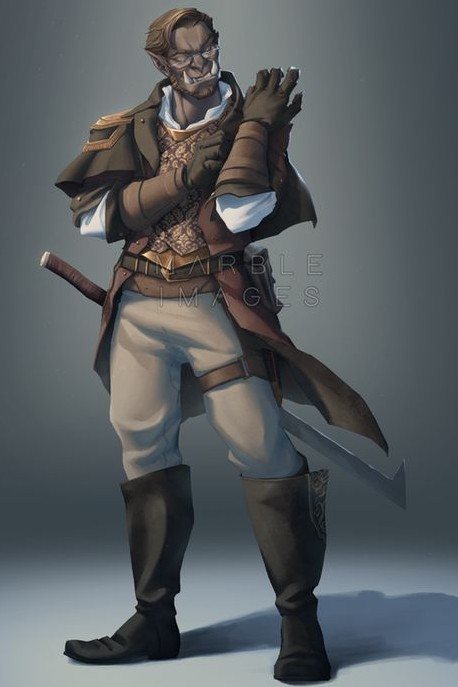
Campaign Trait: Conspiracy Hunter
Description: This janitor has done his job for so long now, he has accepted his job as his name, no longer remembering the name he had forsook. Currently, the Janitor is working in a school investigating a student by the name of Sabrina for possibly being a destroyer. Oddly enough the student is also disliked by a teacher named Sabrina, who displays a disdain similar to The Janitor’s for the censorship of information.
Mungo Whyrm
Dwarven Cleric of Abadar

Campaign Trait: Shadow Child
Description: After springing out of a hole in the ground, as dwarves are want to do, Mungo led a peaceful life as a dirt-loving, kind-hearted engineer's pupil. This profession, while honorable, was more fit for an NPC than an adventursome dwarf as Mungo realized more and more of his God-Given abilities as a healer. Following this call to action, he could no longer sit idly by, and answered his old friend Arael's call to action...
Mortilda Adams
Tiefling Witch 2

Campaign Trait: Infernal Bastard
Description: This librarian was born an only child into a lower class family, her parents did everything they could to give her the best life possible. After an unfortunate work accident involving non-existent safety standards killing her father, her mother shut down. Her mother died shorty after to alcohol poisoning, leaving Mortilda alone as a teen on the streets. After weeks wandering and looking for a purpose, she entered a library. Looking around for a while led her to dark corner of the library where she heard the mew of a kitten. Beneath what was to become her new best friend was a book containing otherwordly knowledge, sparking an insatiable craving for more. Mortilda now spends her days working as a librarian searching for any more information on the contents of that book.
Sabrina
Half-Elf Witch 2

Campaign Trait: Child of Infamy
Description: This school teacher is sick of censoring content.
Valeska Stin
Kayal Armor Master Fighter 2

Campaign Trait: Shadow Child
Description: This merchant was born the second child of a merchant family. Valeska started training with her older brother, who was a guard for caravans or estates (which ever was hiring). After working for such one noble, her brother was killed by the employer, who decided he was a security risk. Opening Valeska’s eyes to the corruption and oppression in Westcrown. She finished her training under the guild leader learning even defense can become an offense and the importance of protecting oneself and those who follow you.
Janiven
Chelish Ranger 3

Description: Janiven is an attractive woman who downplays her beauty by wearing rough clothing and armor and adopting a generally stern and no-nonsense attitude. Yet when she feels truly at ease with someone she calls a friend, her smile, sense of humor, and quick wit reveal her to be quite a charming and friendly woman. She’s known Arael for almost a year now, and has come to think of him as an older brother, and while she respects him greatly and approves of his dream to see Cheliax fall under the guidance of Iomedae, her own faith in Desna has often resulted in lingering arguments about when it is appropriate to toss aside the law of the land in order to ensure the freedom and safety of the citizens.
Awakened Role: Founder - Responsible for the recruitment, creation, and mission of the group, Janiven is ultimately responsible for both its existence, and the survival of its members.
Lesser Boon: Unknown
Greater Boon: Unknown
Arael
Half-Elf Cleric of Iomedae 3

Description: Arael is a handsome man whose family has long lived in Westcrown. He wants nothing more than to see the House of Thrune toppled, but knows that this is a long-term goal at best, and has set his sights, for now, on what he feels is a much more realistic goal—making Westcrown a nicer place to live. His frustrations with the government of Westcrown aren’t that they are pawns of the House of Thrune, but that they don’t do more to make their city a better place to live at the same time. He hopes that by founding a group of do-gooders, if not outright “people’s heroes”, he can show the city’s rulers a better way.
Awakened Role: Unknown
Lesser Boon: Unknown
Greater Boon: Unknown
Amaya
Tian Expert 1
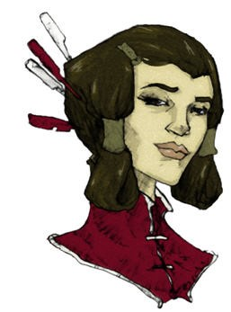
Description: Amaya is a well-mannered glassblower and an incredibly beautiful woman who is somewhat self-conscious about the effect her appearance has on others – she dresses plainly as a result. She hopes someday to visit her distant kin who still live in Magnimar and Sandpoint.
Awakened Role: Unknown
Lesser Boon: Unknown
Greater Boon: Unknown
Ermolos
Chelish Expert 1
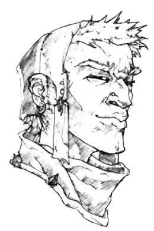
Description: Ermolos is incredibly muscular, a physique the result of a long apprenticeship as a blacksmith. He walks with a slight limp – a lingering effect of a childhood illness. His father and namesake was an adventurer who vanished on an ill-fated journey to Thuvia several years ago — Ermolos still clings to the hope to someday travel across the Inner Sea to find him.
Awakened Role: Unknown
Lesser Boon: Unknown
Greater Boon: Unknown
Fiosa
Halfling Expert 1

Description: Fiosa is a house servant who is friends with many halfling slaves; she takes advantage of her freedom to help her kin as best she can. She has a very real respect for Janiven and Arael after they helped her smuggle several halfing slaves out of Westcrown, and a growing respect for religion in general.
Awakened Role: Unknown
Lesser Boon: Unknown
Greater Boon: Unknown
Gorvio
Chelish Expert 1
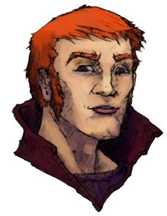
Description: Gorvio is a young man who works for his uncle Jacavo, a horse trader. He dresses conservatively and has strangely bright, amber eyes. He has grown curious over his ancestry and suspects that somewhere in his lineage lurks the blood of a tiefling.
Awakened Role: Unknown
Lesser Boon: Unknown
Greater Boon: Unknown
Larko
Garundi Commoner 1
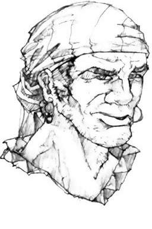
Description: Larko lives a simple life as a dock worker, but daydreams of his childhood in the hills east of Westcrown. If he ever saves up the money, he hopes to move out of the city and live the quiet life. He’s the strong, silent type, rarely speaking.
Awakened Role: Unknown
Lesser Boon: Unknown
Greater Boon: Unknown
Mathalen
Chelish Commoner 1
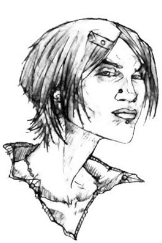
Description: Mathalen is a thin and wiry woman who worked as a porter but found the job dreadfully dull. She frequently takes breaks to meditate and purge her mind of what she calls “the poisons of menial labor”.
Awakened Role: Unknown
Lesser Boon: Unknown
Greater Boon: Unknown
Rizzardo
Varisian Commoner 1
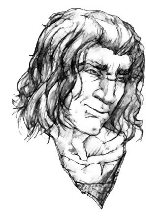
Description: After stowing away on a Chelish ship, Rizzardo found himself more-or-less-stuck in Westcrown years ago. He earns his keep working odd jobs, but switches jobs frequently as a result of his quick temper. He only joined because of a powerful attraction to Janiven, but has since grown to enjoy the company of the others, particularly Ermolos, who he insists sounds just like his little brother.
Awakened Role: Unknown
Lesser Boon: Unknown
Greater Boon: Unknown
Sclavo
Garundi Expert 1
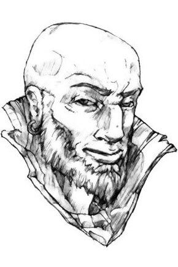
Description: A soft-spoken man and private follower of Iomedae, Sclavo has long worked as a scribe for one of Westcrown’s courts and has a working knowledge of Chelish Law. He longs for a day when the laws of Cheliax can be reformed and sees this group as the perfect means to that end.
Awakened Role: Unknown
Lesser Boon: Unknown
Greater Boon: Unknown
Tarvi
Chelish Commoner 1
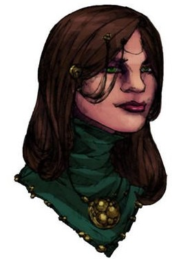
Description: Tarvi’s parents own a prosperous jewelry store in Westcrown – the “Glitter Palace.” She’s worked there for years, but is far too witty and intelligent to do the job well. Having successfully sabotaged no less than a dozen attempts of her parents to marry her off to nobility, she clings to time for her true passion – the study of magic. Caring little for romance, she hopes to someday have the skills to create and sell magical jewelry.
Awakened Role: Unknown
Lesser Boon: Unknown
Greater Boon: Unknown
Vitti
Chelish Expert 1
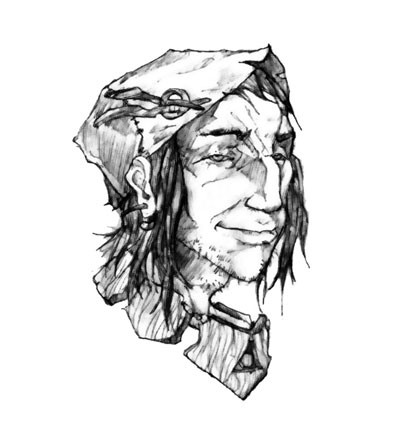
Description: Vitti is a strange, eccentric man who dyes his hair green and refuses to eat any food he doesn’t grow or catch himself. A talented woodcarver whose works earn him a modest income, he prides himself on the fact that he only carves on wood that’s been harvest from deadfalls and other trees that died of natural causes.
Awakened Role: Unknown
Lesser Boon: Unknown
Greater Boon: Unknown
Yakopulio
Gnome Expert 1
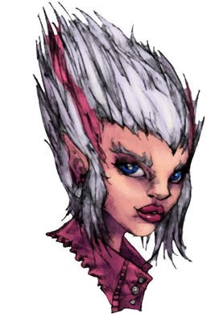
Description: Of all the members, Yakopulio is the least religious – she wears her atheism proudly and her eagerness to contradict often sparks arguments amongst the others in the group. She works as a bartender (and moonlights as a pimp) at a tavern called the Bruised Eel. Most of the others don’t understand what Arael sees in the offensive gnome or what she brings to the table.
Awakened Role: Unknown
Lesser Boon: Unknown
Greater Boon: Unknown